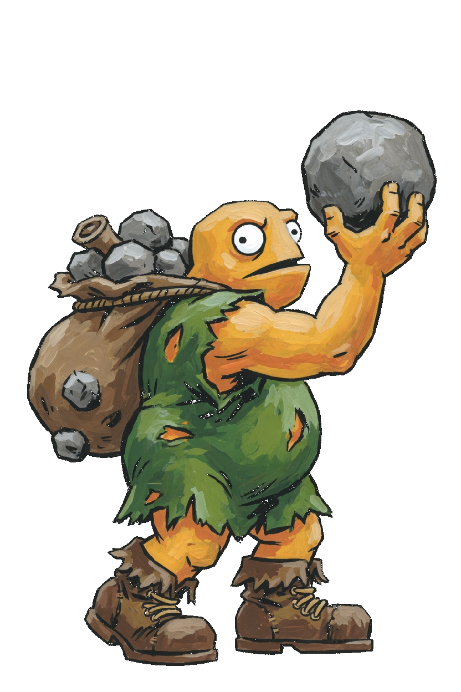
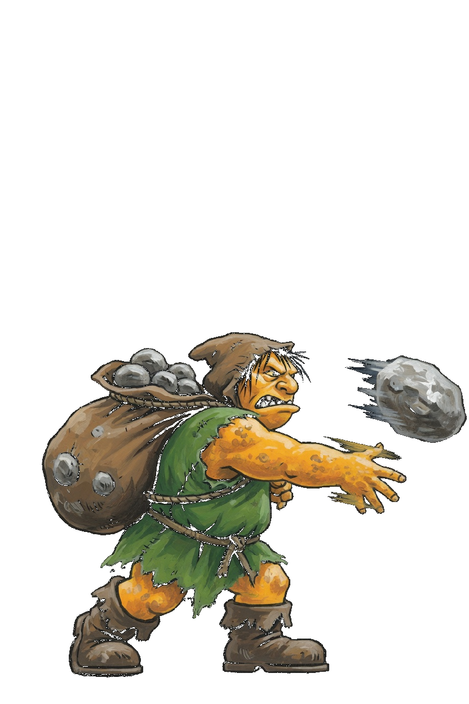
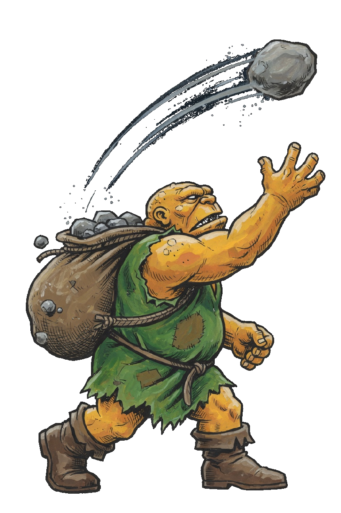
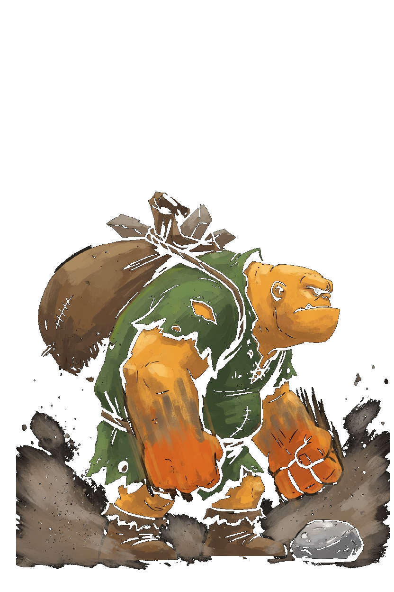
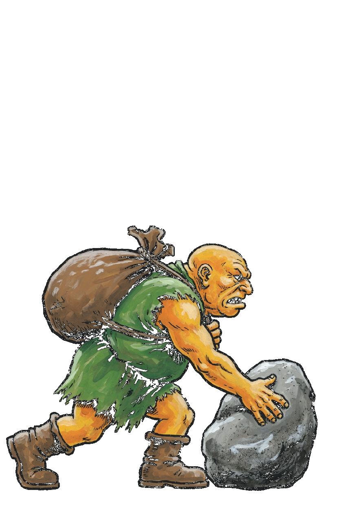
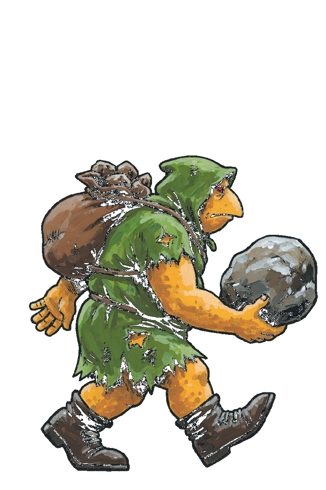
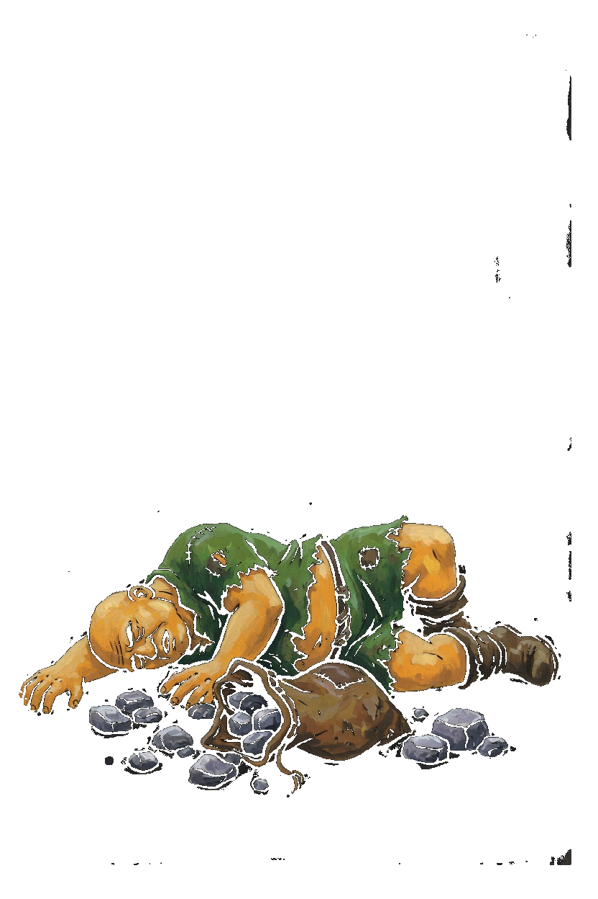
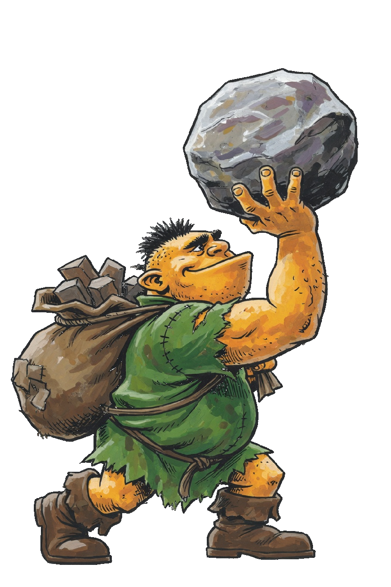

Hurler · Crypt Artillery
This card is the only pose list. A later frame has to match one of these keys. Native facing is right. The whole sprite flips. Yellow-orange body, ragged green tunic, brown sack on the back, grey stone in the forward hand. The boots are the foot line. Hurler is a gun, so the corner step is Slip. There is no move named Dash and no Close key. Stone Toss, Lob Stone, and Ground Pound keep those book names. Ground Pound stays the shared book name.
| Book | Value |
|---|---|
| Basic | Stone Toss · range 5.6 |
| Body | 815 health · 33 damage · 0.72 attacks/s · speed 2.4 · armor 5 · range 5.6 · mana 70 · regen 6 |
| Crit / cooldown | 0.10 crit · 0.90 cooldown scale |
| Cards | Might · Bulwark · Giant |
| Moves | Lob Stone · Ground Pound |
| Stride | Slip · a gun · 30s · cost 8 |
What stays off the body
- Stone Toss is the grey rock that leaves the hand. The sack stays on the back.
- Lob Stone is the rock on the arc. Brute's pound picture stays Brute's.
- Ground Pound is both fists and the dust. The ring on the floor is the slam.
Keys

Idle
Still, facing right, stone raised, both boots on the foot line.

Stone Toss
Idle, then the stone leaves the forward hand, then idle. 0.50s.

Lob Stone
Idle, then the stone leaves on a high arc, then idle. 0.52s.

Ground Pound
Idle, then both fists come down, then idle. 0.50s.

Slip
A lean toward the right, then idle. 0.35s. Corner step only.

Walk
Idle, then one stride. 0.72s. Do not copy it into a second step.

Death
Collapsed in the lower portion, sack spilled. 1.55s. It is not scaled up to standing height.

Win
Stone lifted, chin up, both boots on the foot line. 1.15s.